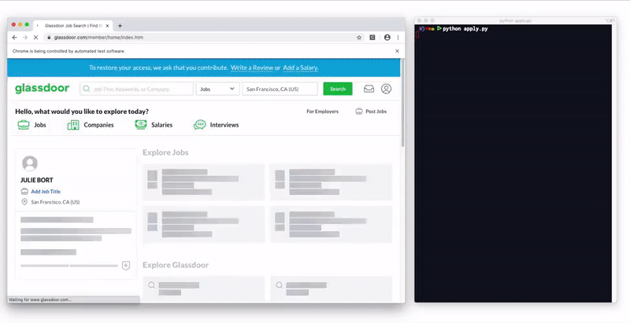

A script to automatically search Glassdoor for job listings, aggregate every application URL, and apply to each job using pre-populated data. All with one click!

📸YouTube Tutorial: https://youtu.be/N_7d8vg_TQA
Ever sit at your desk for hours, clicking through endless job listings hoping to strike gold with one response? To solve this, I made a script a few months ago, which would take in a list of job URLs and automatically apply to potentially 100s of jobs with the click of a button. This was great, but there was one problem — the process of aggregating those links is painstaking. So, I wanted to automate that process with this project! ✨
brew cask install chromedriverchromedriver --versionwhich chromedriverdriver is initialized in the code, insert the ChromeDriver locationpip install seleniumpip install beautifulsoup4get_links.pyget_links.py$ python get_links.py$ python apply.pyapply.py codeThis project is licensed under the MIT License - see the LICENSE.md file for details.